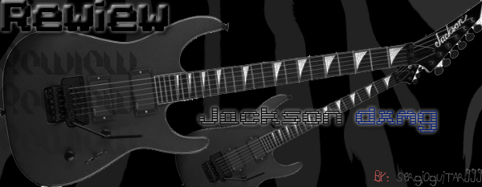
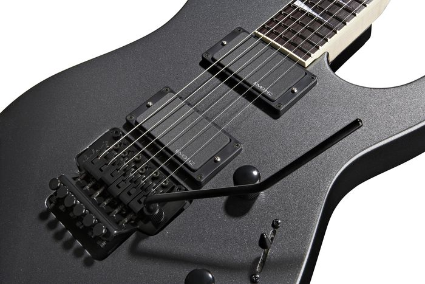

Jackson DXMG dinky style

{kind=link}
CUERPO
Es un estilo clásico superstrato, con un rebaje en la parte superior derecha de la guitarra (mirándola cuando la tocamos), hecho de Basswood, una madera muy liviana, de peso bajo, comúnmente utilizada en guitarras de gamas bajas, aunque existe un tipo de basswood bueno que encontramos en algunas Ibáñez de gamas altas, music man, y es precisamente la que encontramos en esta guitarra (obviamente, es necesario decir que no es tan buena como la de una music man, pero no es para nada una mala madera), de hecho cuando la vi, voltee la mirada por el hecho de que la madera era basswood, y hasta ese momento pensé siempre que era una madera de baja calidad, bajo sustain, y mal tono y resonancia, pero el sonido fue muy complaciente, aunque por las cualidades de esta madera, la guitarra tiene un tono algo brillante, aunque no es como una ibanez, que para mi es una guitarra demasiado chillona (vale la pena aclarar que no todas me parecen chillonas, pero si muchas de la marca)
COMODIDAD
Es un mástil ancho y muy poco gordo (delgado), está hecho de arce (maple), con un binding color crema a través de el, tiene 24 trastes jumbo muy cómodos, el mástil en si no es nada extraño ni incomodo. Aunque tampoco es el mástil mas rápido de el mundo se defiende bien y no te queda mal, se adapta a la mano en un tiempo... yo estaba acostumbrado un mástil menos ancho y mas gordo con 22 trates y trates "medium", y la diferencia para mis manos fue tremenda, al principio me pareció muy incomodo tener 24 trates, pero en 1 o 2 dias mi mano y cuerpo se fueron acostumbrando a la situación, ahora me resulta mucho mas cómodo y rápido que el de mi anterior guitarra, cerca de la conexión mástil/cuerpo, tiene la etiqueta de Made In Japan... Construcción de el mismo: bolt-on, imagino que para reducir gastos y hacer de esta, una guitarra mas económica, el sustain es inexplicablemente ¡¡increíble!!, por las características de la guitarra nunca imagine un sustain tan bueno, aunque se da mas que todo en las cuerdas al aire sigue siendo muy bueno (obviamente hay guitarras con sustain mucho mejor debido a su construcción y madera)
ACABADOS
Los acabados en líneas generales es impresionante. Tiene la tapa de arce, que aunque intuyo que será fina por el precio de la guitarra, da un acabado de una guitarra de muchos más euros, aparte está adornada toda la guitarra con un Binding Blanco-Crema que de la mucha elegancia. Los inlays parecen de Nacar pero dudo mucho que sea, en las especificaciones pone Abalone Dot, que no he encontrado traducción (posiblemente vosotros me podáis traducir la palabra en cuestión para dar una información más veraz y exacta). La pala es totalmente negra exceptuando de una pegueña forma en la parte superior de la misma, la cual está en color caoba, dándole nuevamente un aspecto muy cuidado. En medio de la pala nos encontramos la marca de la guitarra en plateado. La guitarra en su parte trasera está pintada de negro quedando una combinación muy bonita. Sin embargo le he encontrado algún fallito sin importancia, como puede ser en la zona alta del mástil donde el binding está un poco desdibujado y un inlay en el traste 24 un poco desajustado, fallitos que a simple vista no se ven, y que pasan desapercibidos por la mayoría de guitarristas. Este tipo de fallos es muy común en guitarras de marca de 1200 o 1400 euros, cosa que considero imperdonable para una gama media-alta, pero que en una guitarra con un precio tan ajustado como esta, no me molesta lo más mínimo. El lijado de los trástes no es perfecto, pero no molesta, como digo he probado guitarras de 1200 euros con un mástil mucho peor terminado, pero es una cosa que mejoraría. 
{kind=link}
SONIDO
He podido probar la Cort KX1Q en el Spider III de Line 6 de 75W y la respuesta ha sido muy buena, al igual que lo he podido probar con un cabezal a válvulas, el EGNATER 4100, en el que ha salido plenamente victorioso. Por otra parte también lo he podido probar con el POD XT PRO del que he hecho unas cuantas grabaciones en video y audio, en el que el sonido es muy bueno, mucho más de lo que cabría esperar de una guitarra de esta gama. Realmente se puede hacer sonar bien esta guitarra. Aunque bien es cierto que no es una guitarra en la que podamos pretender sacar mucha dinámica ya que debido a su mástil de caoba, encolado al cuerpo de Caoba y cuerdas através del cuerpo, tiende a tener mucho sustain por lo tanto nos mata un poco esos picos agudos que nos harían ganar dinámica, y al igual que sus pastillas que son bastante cañerítas, que tienden a comprimir la señal de la guitarra, impidiendo tener buena dinámica. Esto ni es bueno ni es malo, es depende de lo que uno busque. Una guitarra con mucha dinámica es más complicada de hacerla sonar, ya que es más seca, entra más la mano del guitarrista. En esta guitarra sin embargo suena todo más ligado, con sustain, y todo más o menos a un mismo volumen. Se ocupa de entregar un sonido uniforme con cuerpo.
Siguiendo con su sonido, podríamos definir que es una STRATO VITAMINADA, es decir, podemos conseguir los típicos sonidos Strato con la pastilla del mástil, con el Push-Pull up, en la que estaríamos en Single Coil, y tendríamos un sonido Strato o muy parecido, con buen tono, pero también podríamos buscar sonidos más a Les Paul con la misma pastilla pero con el Push-Pull off, consiguiendo un tono nasal y acercarnos un poco al citado sonido, siempre salvando las distancias, por que, como es evidente le falta madera (kg) para que pueda sonar tan gordota. Así pues podríamos decir que es una guitarra muy versátil debido a que podemos pasar de sonidos Strato a sonidos tipo Les Paul, pasando por sonidos tipo Ibanez pero con más cuerpo (pastilla puente doble).
Podemos decir que estamos ante una guitarra que por sus maderas, su mástil encolado, cuerdas a través del cuerpo, busca un sonido ligado con un buen tono, y que gracias a sus pastillas pasivas de EMG conseguiremos sonidos bastante contundentes sin resultar chillona.
También disfrutaremos de un limpio mas tirando a cristalino cuando pongamos la pastilla del puente en Push-Pull up, ya que estaremos en una Single Coil y solamente con poner el Push-Pull off, y tendremos un sonido limpio mucho más gordo, llegando incluso a saturar un poco (hay que tener cuidadin con la ganancia del canal limpio), y bueno lo mismo sucede con el resto de posiciones.
ASPECTOS POSITIVOS
- Relación Calidad/Precio muy buena.
- Buenos acabados.
- Comoda.
- Buen sonido.
- Sonido uniforme.
- Se puede hacer cualquier técnica sin problemas.
- Es estable en su afinación.
- Acción baja de cuerdas.
- Pastillas bastante buenas.
- Todo aquello que supone tener un mástil encolado de caoba, cuerpo de caoba, tapa de arce preciosa y cuerdas através del cuerpo a un precio ajustado.
- Muy Versatil
ASPECTOS NEGATIVOS
- Un mejor limado de los trastes.
- Algunos acabados antes citados podrían mejorar.
- El potenciómetro Push-Pull que a su vez es tono, gira con excesiva ligereza.
- Posición del potenciómetro de volumen y el selector de pastillas.
OPINION PERSONAL
Me ha sorprendido muy gratamente, ya que la compré como 2ª guitarra en www.guitarristas.es, pero la voy a utilizar mucho más de lo que pensaba, sobre todo para mi grupo. La única pega destacable sería la falta de dinámica, pero para eso ya tengo la Suhr u otros modelos de Cort más pensados para hacer ese tipo de música. Recordad que no existe la guitarra perfecta si no hay que elegir la guitarra perfecta para el estilo o la cosa que queramos hacer. Lo que también me ha hecho recapacitar esta guitarra es que para sonar bien no es necesario gastarse 2000 euros, ya que cada uno tenemos un sonido en nuestras manos, y lo primero que hay que buscar es la comodidad, luego la estabilidad del instrumento, luego el sonido y por último la estética.